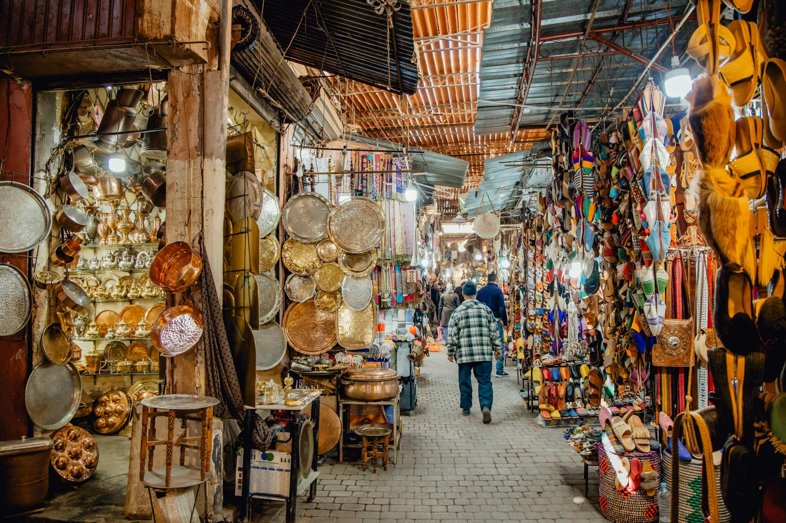

歷史簡介
馬拉喀什由阿爾摩拉維德王朝於公元 1070 年建立，作為橫跨撒哈拉商路的南端樞紐，黃金、鹽與奴隸都經此轉運。12 世紀穆瓦希德王朝接手後大舉擴建，今日仍然屹立的庫圖比亞清真寺與十二公里長的紅土城牆，都在這個時期成形。
16 世紀薩阿德王朝帶來第二個黃金時代，宮殿、陵墓與灌溉系統相繼落成；19 世紀末的巴希亞宮，是這段宮廷傳統最後一次綻放。1912 年摩洛哥成為法國保護國，新城區在舊城之外發展，麥地那得以大致保留原貌。1985 年，聯合國教科文組織把馬拉喀什麥地那列入世界文化遺產。

文化特色
馬拉喀什的文化是柏柏爾原住民與阿拉伯伊斯蘭傳統長期混血的結果。麥地那的市集按行業分區，染坊、皮革場、燈具與地毯各有自己的巷道；空氣裡同時有薄荷茶、雪松木與生皮的味道。庭園式的 riad 住宅把喧鬧留在門外，進門之後只有水聲與橙樹。
音樂上，源自西非奴隸傳統的 Gnawa 音樂在 2019 年被聯合國列為非物質文化遺產，每晚仍可在廣場邊聽到。飲食以慢火燉煮的 tagine、蒸粗麥粉 couscous 與街頭現榨橙汁為主；待客的薄荷茶要從高處倒出，才算有禮貌。